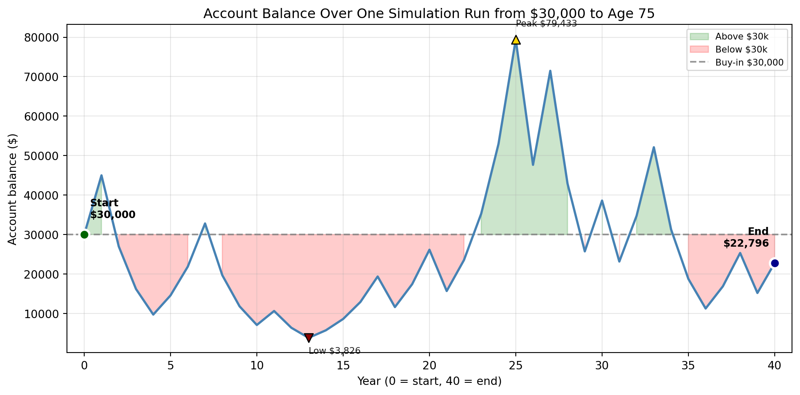
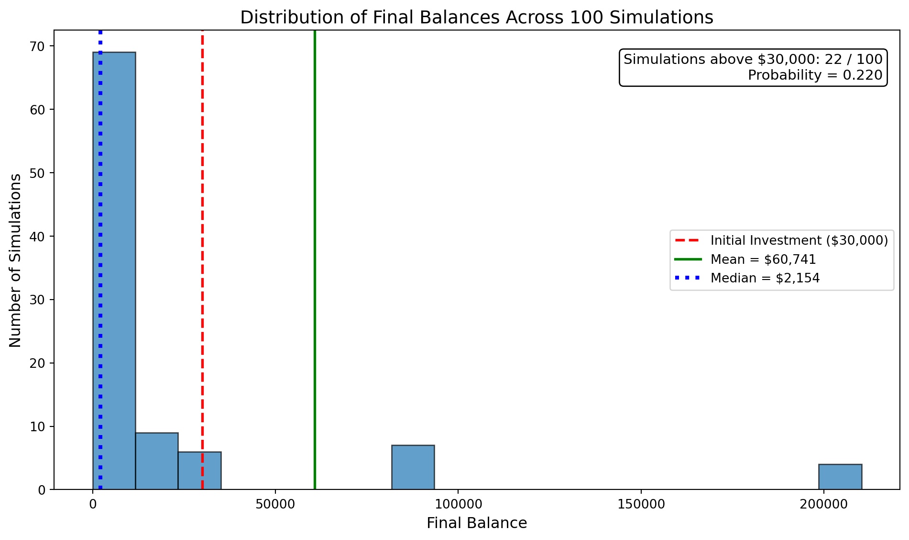
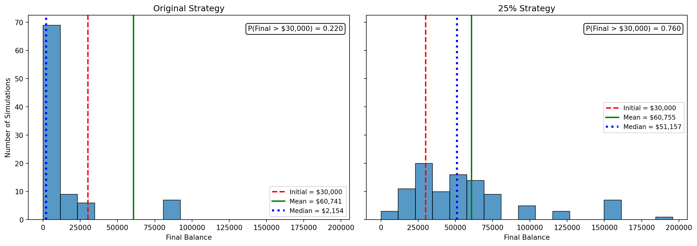

Simulation Challenge
The Investment Game (Brief)
You have the opportunity to buy-in to this game next week with $30,000. Your job is to analyze the potential outcomes of the game and communicate why you should or should not buy-in.
Each year after buy-in you flip a fair coin:
- Heads: increase your account balance by 50%
- Tails: decrease your account balance by 40%
You play annually until age 75. Your mission is to analyze outcomes and communicate insights clearly.
Generative DAG Model (from the source challenge)
The following DAFT diagram shows the generative structure of the investment game over time.
Analysis
1) Expected Value After 1 Flip
The expected value of your account balance after one flip is greater than $30,000.
After one flip, the expected account balance is $31,500, which is 5% higher than the $30,000 buy-in. So for every dollar you put in, you expect about $1.05 after one flip, on average.Based on expected value alone, this looks like a favorable gamble. If I only looked at one period, I would be inclined to buy in because the average outcome is positive.
Here is the detailed calculation in 3 steps:
Step 1 — Outcomes after one flip:
Buy-in: $30,000
If heads (+50%): $45,000
If tails (-40%): $18,000
Step 2 — Expected value (probability × outcome, then sum):
0.5 × $45,000 = $22,500
0.5 × $18,000 = $9,000
EV = $31,500
Step 3 — Gain (EV − buy-in):
Gain = $31,500 − $30,000 = $1,500 (5.0% of buy-in)
Verdict: EV > buy-in → positive expected value → recommend buy-in.2) Single Simulation Over Time (Narrative + Plot)
We pretend to play the game once, from start to finish. Every year we flip a coin: heads = balance goes up 50%, tails = balance goes down 40%. We start with $30,000 and play for 40 years. The graph below shows what happened in this one imaginary run—like watching one person’s account over time.

What you see on the graph:
- Blue line = your balance each year in this one run.
- Green shading = years when you were above your $30,000 buy-in (you’re “ahead”).
- Red shading = years when you were below $30,000 (you’re “behind”).
- Start and End dots show where you began and where you finished.
- Peak and Low show the best and worst your balance ever got in this run.
Result of this run: After 40 years, this single simulation ends at $22,796.
In one simulated run, the account balance was very volatile and ultimately disappointing. Although there were some gains along the way, several losses had a compounding effect that the later gains could not fully overcome. The account finished at about $22,796, which is about 24% below the original $30,000 buy-in. I would not be satisfied with this outcome, because despite the positive expected value in a single year, this particular long-run path destroyed about 24% of the initial investment.
This single run shows the central tension of the game: the upside is large, but repeated exposure to downside shocks can erode wealth dramatically over time.
3) 100 Simulations: Distribution of Final Balances
The distribution of final balances across 100 simulations is highly right-skewed. Most simulations result in relatively low final balances, while a small number produce very large outcomes. The mean final balance is approximately $60,741, while the median is only about $2,154, indicating that typical outcomes are much worse than the average suggests. The mean is misleading because it is driven by a few extreme outcomes. Out of 100 simulations, only 22 ended with more than the initial $30,000 investment, giving a probability of 0.220. I would not be satisfied with these likely outcomes, because the majority of scenarios result in losses or minimal returns despite the high average driven by a few extreme gains. The median is a more realistic estimate of the typical outcome, and it is much more likely to be achieved in a single run.

4) Probability Balance > $30,000 at Age 75 (Original Game)
P = 0.220 (22.0%)The probability that the final balance exceeds $30,000 is approximately 0.220, or 22.0%. This means that only about 22 out of 100 simulations result in a final balance greater than the initial investment, while the majority of outcomes fall below $30,000. This significantly changes my recommendation from Section 1. Although the expected value is positive, the low probability of ending ahead suggests that this is not an attractive investment in practice. I would not recommend buying into the original game.
5) Modified Strategy (Bet Exactly 25% Each Round)
The modified 25% strategy is less risky than the original game because only part of the account balance is exposed each year. In the histograms, the original strategy shows much greater spread and more extreme outcomes, indicating substantially higher volatility. It also has the better upside, since a few simulations produce very large final balances. However, those extreme winners are rare.
The 25% strategy produces a more concentrated distribution and a higher probability of finishing above the initial $30,000. For that reason, I would recommend the 25% strategy. It gives up some extreme upside, but it provides a much more favorable balance between growth and long-run survival.

Original strategy: mean = $60,741, median = $2,154, P(> $30,000) = 0.220
25% strategy: mean = $60,755, median = $51,157, P(> $30,000) = 0.7606) The Kelly Criterion
The Kelly Criterion is a method used to determine the optimal fraction of wealth to invest in a repeated gamble in order to maximize long-run growth. Unlike strategies that focus only on expected value, the Kelly Criterion accounts for compounding and risk, ensuring that the investor avoids large losses that can significantly reduce future growth potential.
In this investment game, applying the Kelly Criterion shows that the optimal fraction to bet each round is 25% of the current balance. This directly corresponds to the modified strategy analyzed in Section 5.
The Kelly Criterion supports my recommendation. While the original strategy exposes the entire balance to risk and produces highly volatile outcomes, the 25% strategy provides a better balance between growth and risk. It leads to more stable outcomes and a higher probability of finishing above the initial investment. Therefore, the Kelly Criterion confirms that the modified strategy is the more appropriate choice for long-term investing.
Conclusion
I would not recommend participating in the original version of the game, where the full balance is at risk each year, because the probability of achieving a positive outcome is low. However, if participation were required, the modified strategy of betting 25% of the balance each round is clearly preferable. It reduces risk, improves typical outcomes, and is supported by the Kelly Criterion as the optimal long-run strategy.